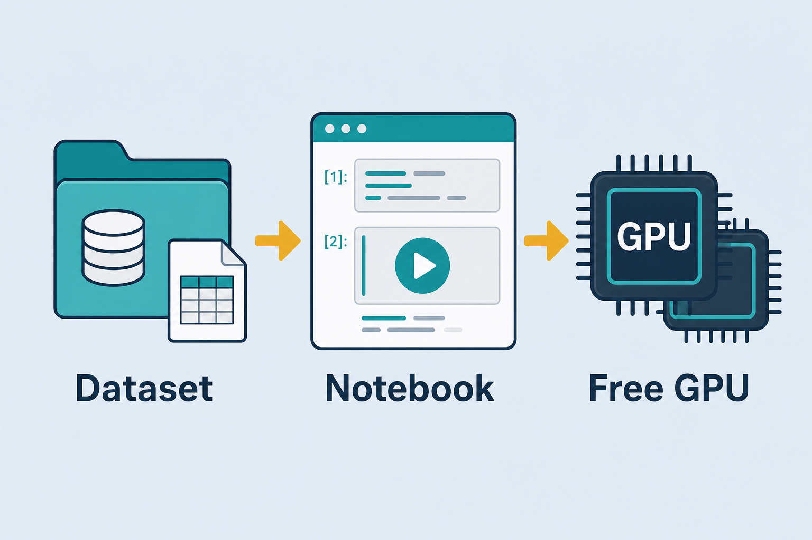
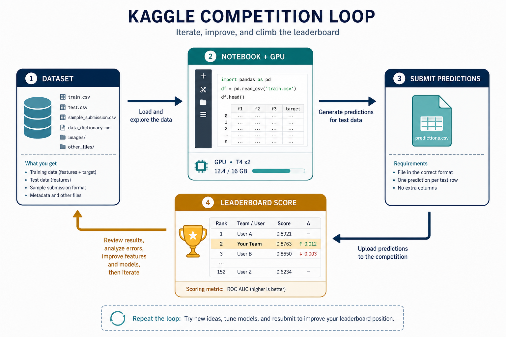

Kaggle — Dataset + GPU Notebook
Dataset library + free GPU/TPU notebooks + competitions to practice.
Kaggle — Free Dataset + Notebook + GPU
ML learning and competition platform: huge dataset library, notebooks with free GPU/TPU, and competitions to practice. Similar to Hugging Face but tilted toward hands-on work and leaderboards. Everyday metaphor: a shared workshop with free tools, wood piles (datasets), and contests on the wall.
Why it matters
When learning, two things are often missing: good data and enough compute. Kaggle offers both for free — diverse datasets and GPU notebooks in the browser. Competitions add leaderboards and public solutions so you can learn from what top performers do.
Pair it with Hugging Face: grab a pretrained model from the Hub, train on Kaggle’s GPU, export the checkpoint into a lab demo.
Key ideas
- Datasets: tens of thousands of public datasets, downloadable straight into a notebook (or via the Kaggle API:
kaggle datasets download -d owner/slug). - Notebooks (Kernels): built-in libraries (PyTorch, TF, sklearn…); enable GPU/TPU in settings → train without installing CUDA locally. Typical free GPU tiers are on the order of ~30 GPU hours/week (quota changes — check current Settings → Accelerator).
- Competitions: real problem + metric + leaderboard; submit predictions for a score. Read public notebooks for tips — reproducing a strong baseline teaches faster than starting blank.
- Quota limits: free GPU hours are capped per week — save them for real training runs, not idle kernels left open overnight. Disable the accelerator while debugging prints and plots.
- HF connection: often download data on Kaggle, grab a pretrained model from Hugging Face, then train in a Kaggle notebook (
!pip install -q transformers datasetsif needed). - Export: download weights / ONNX / TorchScript → plug into inference demos (car-nn, sentiment…). Persist to a Kaggle Dataset version so the next session can
add datainstead of re-uploading. - Public vs private LB: the public leaderboard is a visible slice; the private LB (final) can reshuffle ranks — overfit the public slice and you drop at the end.
Short workflow
pick dataset (or competition) → new notebook → enable GPU
→ load data + HF model → train epochs → watch val metric
→ export checkpoint → use in demo / Space
Worked example (intuition)
Competition: classify dog breeds from images. You fork a public EfficientNet notebook, swap in a Hub vision model, train 5 epochs on GPU, submit. Leaderboard feedback tells you if augmentation or LR was the real lever — not just “I trained something.”
Numbers to expect: ~10k labeled images, 120 breeds, EfficientNet-B0 fine-tune with LR 1e-3 (head) then 1e-4 (full), batch 32 on a P100/T4-class GPU → roughly 5–20 minutes/epoch depending on image size. If public LB is log-loss, a model at accuracy 0.85 can still lose to one with better-calibrated probs at accuracy 0.83 — optimize the stated metric, not vibes.
Common pitfalls
- Burning GPU quota on print-debug loops — debug on CPU / tiny samples first.
- Ignoring the competition metric — optimizing accuracy when the score is log-loss.
- Copy-paste without understanding — public notebooks win until the private leaderboard; learn why steps exist.
- No offline export plan — notebook dies with the session; save artifacts to Kaggle datasets or download them.
- Internet off in competitions — many code comps disable network; pre-bundle datasets/models or use official competition data only.
- Leaky preprocessing — fitting scalers / augment stats on train+test together; fit on train only.
Illustrations


Deeper dive
- Accelerator settings. Notebook → Settings → Accelerator → GPU (or TPU). Verify with
!nvidia-smiortorch.cuda.is_available(). Failure mode: code assumes CUDA but accelerator is None → silent CPU crawl that burns session time without using quota efficiently. - Quota economics. GPU hours are weekly; interactive sessions count while the kernel is on. Pattern: prototype on CPU with
df.head()/ 1% sample → flip GPU on for the realfit/Trainer.train()→ save checkpoint → turn GPU off. Leaving a Gradio loop or infinite plot refresh overnight wastes the week’s budget. - Metric alignment. Competitions publish an exact score (log-loss, macro-F1, quadratic weighted kappa, …). Mini comparison: accuracy cares about hard labels; log-loss punishes confident wrong probs — temperature scaling or softer labels can raise LB without changing
argmaxaccuracy. Always implement a local validation that mirrors the host metric. - Public notebooks as curriculum. Sort by score, fork the simplest high scorer, delete unused cells, re-run end-to-end, then change one variable (LR, augmentation, model size). Blind stacking of 10 notebooks without a local CV usually overfits the public LB.
- HF + Kaggle bridge.
from_pretrainedneeds network (or a pre-downloaded model Dataset). In offline comps, attach a Dataset that already contains the weights folder and pointfrom_pretrained("/kaggle/input/.../model"). Tokenizer files must travel with the weights. - Export checklist. Save: (1)
state_dict/.keras/ safetensors, (2) tokenizer / label map JSON, (3) preprocessing config (image size, normalize mean/std). Version them as a Kaggle Dataset. Without (2)–(3), the demo loads weights but predicts garbage. - CV discipline. Prefer stratified k-fold or a fixed GroupKFold when related rows leak (same patient / same product). Report mean±std of the competition metric across folds before trusting a single public submit.
- Session hygiene. Name notebooks clearly, pin dataset versions, and write the accelerator + package pins in the first cell. Future-you (or a teammate) should reproduce the run without archaeology in
/kaggle/working. - Submit vs local gap. If local CV and public LB disagree by a large margin, suspect leakage, wrong metric implementation, or train/test distribution shift — not “need a bigger model” first.
Decision guide
| Situation | Prefer | Avoid / why |
|---|---|---|
| Learning + free GPU for a lab model | Kaggle notebook + HF pretrained weights | Buying cloud GPU before you have a working CPU baseline |
| Debugging data / plotting | CPU accelerator (or tiny sample on GPU) | Full-data GPU epochs while fixing print typos |
| Competition scored by log-loss | Calibrated probs; match local CV to log-loss | Maximizing accuracy only — LB won’t move with you |
| Offline / no-internet code comp | Bundle model+tokenizer as a Dataset input | Runtime pip install / Hub download mid-submit |
| Keeping work across sessions | Versioned Kaggle Dataset of checkpoints | Relying on ephemeral /kaggle/working alone |
| Climbing the leaderboard | One change at a time + solid local CV | Mega-ensembles copied blindly before you understand the metric |
Case study
Dog-breed image competition: ~10k images, 120 classes, scored by multi-class log-loss.
- Inputs: competition train folder + labels CSV; Hub vision backbone; notebook with GPU enabled only for training cells.
- Steps: CPU EDA + 1% sample sanity check → enable GPU → fine-tune EfficientNet-B0 (head LR
1e-3, then full1e-4), batch 32, 5 epochs → local stratified CV log-loss → writesubmission.csv→ download checkpoint Dataset for the lab demo. - Output: public LB log-loss competitive with a simple baseline; artifact Dataset holds weights + label map + image size/normalize config.
- What you'd check:
nvidia-smibefore long runs; GPU off while debugging plots; local metric matches host log-loss (not only accuracy); private-LB risk if you overfit public notebooks blindly.
Lab checklist
- [ ] Create a notebook, attach a dataset, and verify paths under
/kaggle/input - [ ] Run a CPU dry-run on a tiny sample before enabling the GPU accelerator
- [ ] Confirm GPU with
nvidia-smiortorch.cuda.is_available()once - [ ] Train ≥1 real epoch and record the competition metric locally
- [ ] Save checkpoint + tokenizer/label map as a versioned Kaggle Dataset
- [ ] Disable the accelerator when finished to protect weekly quota
- [ ] Fork one public notebook, delete unused cells, and change exactly one hyperparameter
- [ ] Export weights to your machine or Hub for use outside Kaggle
Pipeline
Kaggle dataset → notebook (enable GPU) → train (epochs) → export model → inference
Same role as “data + GPU runtime” alongside huggingface.md; stack overview at train-gpu.md.
Slides & demo
| Link | |
|---|---|
| Slides | slides/kaggle |